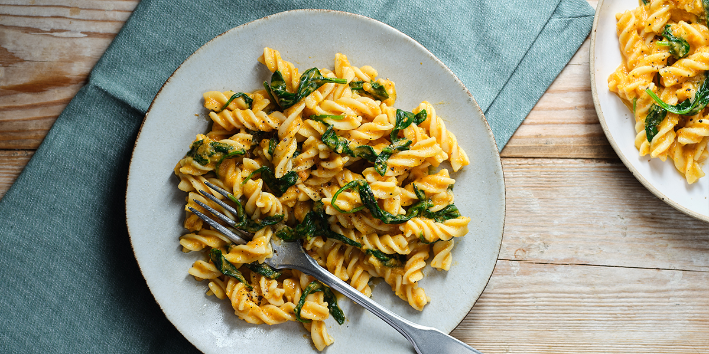

Pasta with Roasted Vegetable Ragu

Description
Use up some leftover roasted carrots and parsnips for an easy dinner.
Ready in 20 minutes, it's perfect winter comfort food.
Ingredients
- 250g fusilli
- 300g leftover roasted carrots and parsnips
- 50g sundried tomatoes
- 1 vegetable stock cube
- 40g spinach
Steps
- Cook 250g fusilli according to the pack instructions
- Drain, reserving some of the pasta water
- Put half of the leftover roasted carrots and parsnips into a saucepan along with 50g sundried tomatoes and 1 vegetable stock cube, crumbled, from your storecupboard
- Pour over 300ml boiling water and bring to a simmer
- Season with black pepper and cook for 2-3 mins to heat the veg through
- Blitz with a handheld blender until smooth
- If the sauce is too thick, loosen with a splash of the pasta water
- Season to taste, then stir in the cooked pasta along with 1 tbsp oil from the jar of sundried tomatoes
- Return the pan to the heat, add 40g spinach and cook until just wilted